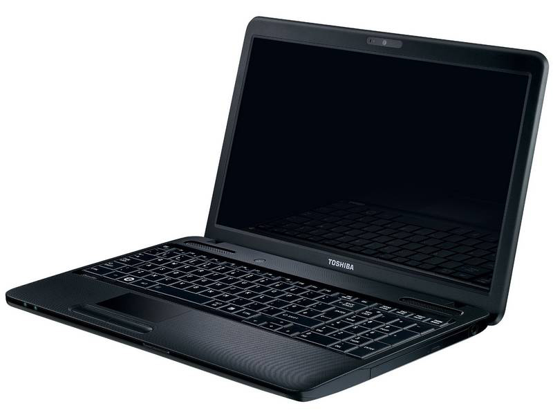

Toshiba
Precio 549€
Pero la calidad no sólo está en su pantalla táctil de 11.6" HD, está en cada parte de él, como en su interior, donde alberga un procesador Intel® Celeron® N2840 y 4GB de RAM para que siempre disfrutes de un buen rendimiento. Para guardar toda tu vida dentro del Toshiba Radius, han incluido un disco duro de 500GB, que te permitirá olvidarte de los problemas de espacio. Y obviamente, también pone a tu disposición todo tipo de conexiones y hasta una Webcam HD para tus vídeollamadas. Llamadas que oirás con total nitidez gracias a los altavoces estéreo integrados con tecnología DTS® Sound™. Sé tan versátil como el nuevo 2 en 1 convertible Toshiba Satellite Radius L10W-B-101 y dale una vuelta a tu mundo.